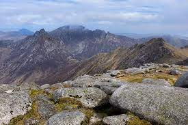

Goat Fell (marked as Goatfell by the Ordnance Survey; Scottish Gaelic: Gaoda Bheinn) is the highest point on the Isle of Arran. At 874 metres (2,867 ft), it is one of four Corbetts on the island. The mountain, along with nearby Brodick Castle, is now owned by the National Trust for Scotland.The name is believed to mean 'Goat Mountain' (from the Norse geita).
Due to the popularity of "Scotland in miniature" (Arran), Goat Fell is a very popular peak and there are many possible routes of ascent, some of which may be combined with visits to the summits of other nearby peaks. The most commonly used route, a constructed path of just over 3 miles (5 km) in length, starts from near Brodick Castle in Cladach. Initially the path leads up through the forested grounds of the castle, passing many rhododendron bushes. At just under 1,000 ft (300 m) above sea level the path leaves the forestry, and the route continues through bare moorland, reaching the summit by way of the east ridge of the mountain. There is a viewpoint table at the summit: on a clear day Northern Ireland may be seen.Goatfell summit on a clear day.An alternative shorter and steeper route comes up from the village of Corrie. This route joins the main path on the east ridge. Goat Fell may also be climbed from the north, where it is linked by a ridge to the subsidiary top of North Goatfell, a point from which three ridges radiate. In addition to the ridge leading south to the main summit, there is a ridge heading northeast, providing some very easy scrambling as it passes over Cìoch na h-Òighe (the Young Maiden's Breast). Finally, the western ridge drops down to a bealach known as The Saddle, before climbing again towards the summit of Cìr Mhòr. The right-of-way between Glen Rosa and Glen Sannox passes over The Saddle.The mountain was the scene of the death of English tourist Edwin Rose who was murdered by John Watson Laurie in 1889 on the mountain. Laurie was sentenced to death, later commuted to a life sentence and spent the rest of his life in prison.[1]
Sites visited:
How to play:
Something else